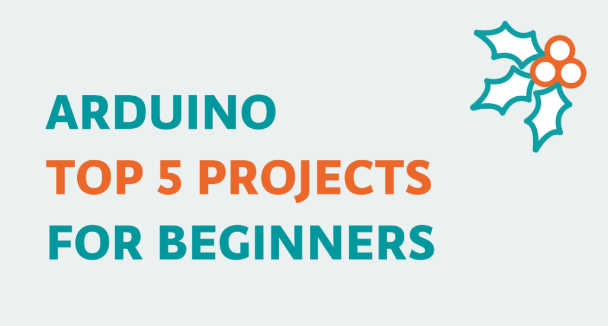
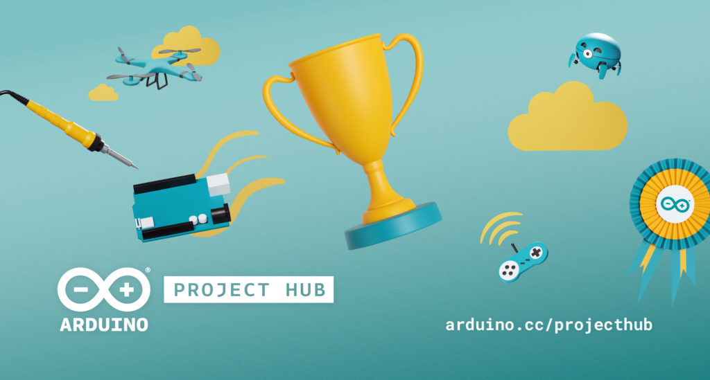

Start your journey to mastering Arduino programming with our comprehensive tutorials and hands-on projects.
Arduino is an open-source electronics platform based on easy-to-use hardware and software. It's designed for makers, hobbyists, and professionals to create a wide range of interactive projects and devices.
Arduino boards come in various shapes and sizes, offering different capabilities and features. With its user-friendly environment and vast community support, Arduino has become a popular choice for learning electronics and programming.Check out this arduino website for more information!
Arduino-powered quadruped robots are quite common projects for hobbyists to build...
Home for the holidays? This is the perfect time to make something!...
Our recently launched “Arduino Project of the Month” initiative adds a pinch of competition...
When you’re first starting out with Arduino, it’s imperative that you understand all of the elements that come with it. Usually, you’ll have a few LED lights, a breadboard (the piece with all of the holes), and a controller piece to connect it all together.
You will also have to learn how to code. That can be the most challenging aspect of Arduino, so we highly recommend that you start with something easy and straightforward. This traffic light controller project is perfect because it enables you to use all of the systems provided by Arduino and learn them without getting too technical or too complicated.
Simply put, once you master building this, you can move on to more complex projects that can both expand your capabilities and help you push your creative outlet.
Although you should have these devices installed in your house already, it’s always a good idea to have more, just to be safe. Building a smoke detector with an Arduino board will help you understand how these systems work and why they are so vital for home safety. Not only that, but you can also adapt it to detect and warn against other elements, such as natural gas or carbon monoxide.
Once again, you probably have a mercury thermometer or a thermostat in your home that can offer readings without having to build something from scratch. However, there is something remarkably satisfying about creating a device that can be tested so easily and deliver such profound results. Mastering this project will be an excellent stepping stone to other, more significant systems.